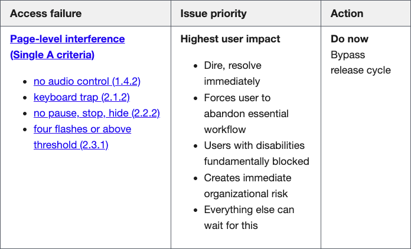
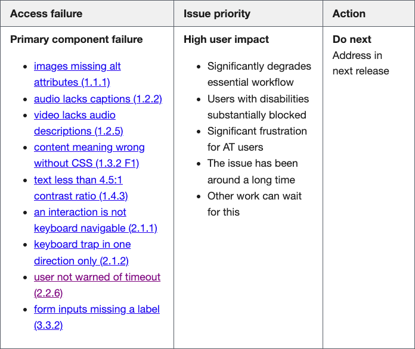
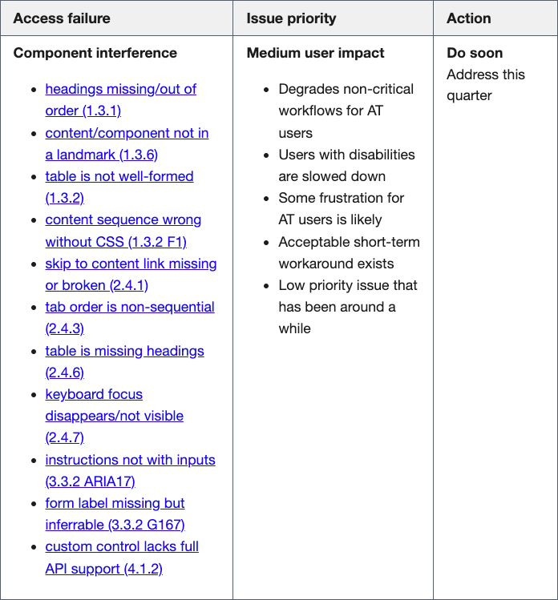
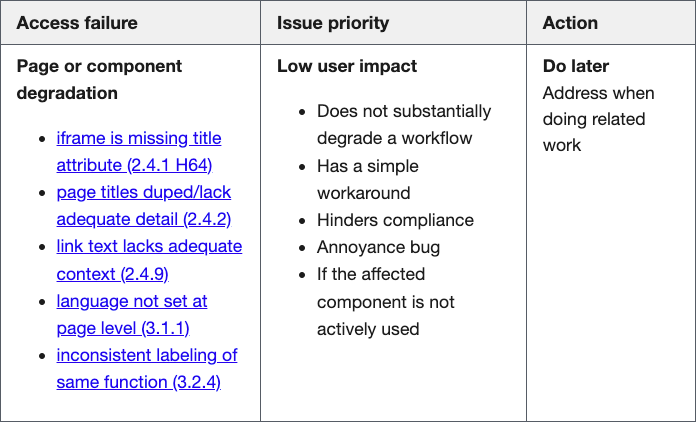
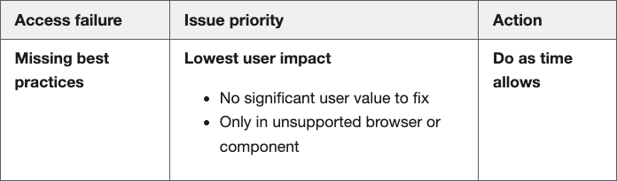

By Jack Haas, Front End Engineer
Juggling competing priorities, tight deadlines, and endless iterations can make it easy to deprioritize accessibility considerations. In our work, we’ve seen how neglecting accessibility can lead to frustrating user experiences and other consequences. That’s why we decided to treat accessibility issues with the same urgency as any other bug.
Enter the Accessibility Bug Classification Matrix, which we created to help us quickly prioritize issues based on their impact. It provides a clear framework for promptly identifying and addressing the most critical accessibility barriers.
Features of our bug classification matrix
- Adapted from industry best practices
- Covers a wide range of Web Content Accessibility Guidelines (WCAG) criteria
- Prioritizes issues based on user impact severity
- Provides clear action steps for each priority level
Overview
As our team grows and projects become more complex, we’ve realized the value of having a centralized process and systemic approach to prioritizing accessibility bugs as they are discovered.
Inspired by the impact classifications developed by accessibility experts at Deque, we adapted their framework to fit our workflows and priorities. The result is a helpful tool that helps our teams quickly assess and prioritize accessibility issues based on their true severity and impact on users.
This matrix isn’t just for accessibility experts. We designed it to be a resource for all team members, regardless of the accessibility knowledge. By providing clear definitions and examples for each priority level, we’re empowering everyone on our team to make informed decisions about what needs to happen when a bug is discovered.
It’s important to note that this isn’t meant to be a rigid, exhaustive list of every possible accessibility issue. We recognize that the field of accessibility is constantly changing, and new challenges emerge.
Accessibility as a team sport
We’re fostering a culture of shared responsibility by making this resource available to the whole team. Accessibility shouldn’t be limited to a few experts. Whether you’re a project manager triaging a backlog of issues, a QA team member doing release testing, or a designer who has noticed something odd when reviewing how their work was implemented, our Accessibility Bug Classification Matrix provides a common language and clear guidance.
Assessing failure levels and issue priorities
We’ve divided the matrix into five levels, each with its own set of criteria and corresponding remediation priority.
Level 1: Page-level interference (Single A WCAG criteria)
Think of this as the “drop everything and fix it now” category. Issues at this level are the most severe, as they fundamentally block users with disabilities from accessing essential content or functionality.

When we encounter issues like these, our priority is to address them immediately, even if it means bypassing a regular release cycle. The user impact is simply too high to defer resolving the issue.
Level 2: Primary component failure
Next up are issues that significantly degrade the user experience for key components or content. While not as severe as Level 1 issues, these still present substantial barriers for users with disabilities.

The goal is to address these level 2 issues in the next regular release cycle. They’re high priority but with a bit more flexibility (compared to Level 1).
Level 3: Component interference
At this level, we’re dealing with issues that, while not completely blocking access, still present significant usability challenges for assistive technology users.

Our target for Level 3 issues is to resolve them within the current quarter as part of regular backlog refinement.
Level 4: Page or component degradation
These issues, while still important to address, have a lower impact on overall usability. They may hinder compliance or present minor annoyances but typically have workarounds.

We prioritize these for remediation as we’re doing related development work or as time allows.
Level 5: Missing best practices
Finally, we have issues that might not be strictly related to compliance but represent opportunities to enhance accessibility and user experience. For these, we rely on ongoing accessibility education and awareness among our teams to consistently apply best practices and bake these in from the start.

By breaking issues down into clear, actionable levels, we can ensure that the most impactful issues are addressed promptly while still being pragmatic about making improvements.
Advancing accessibility, one bug at a time
Project realities like tight deadlines and limited resources often force teams to make tough choices about where to focus their efforts. By using tools like the Accessibility Bug Classification Matrix and developing a culture of responsibility, teams can make meaningful progress without compromising other project goals. A clear, actionable framework lets us be strategic about where to spend our time to provide the biggest impact. The key is to approach accessibility pragmatically and as an ongoing process.